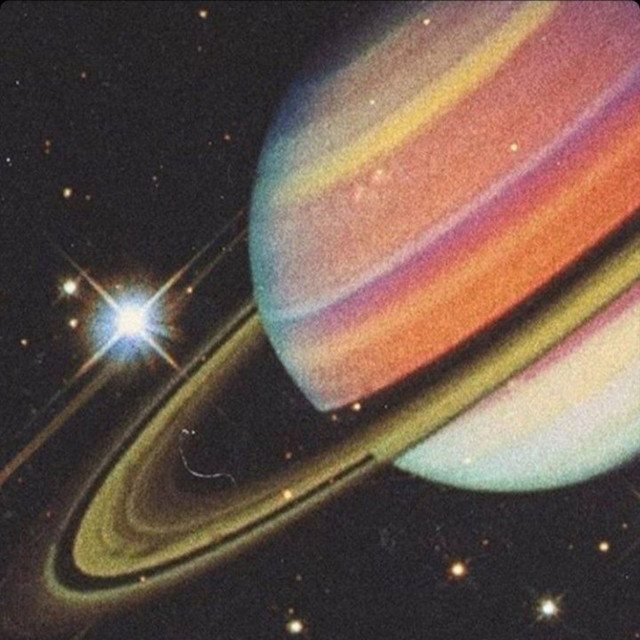

The Eclectic Polymath Podcast · Archive
#053: Saturn’s Return: A Cosmic Rite of Maturity

About this episode
The Saturn return is one of astrology’s most famous life markers: the moment, roughly every 29 and a half years, when Saturn returns to the same place it occupied when you were born.
This episode looks at why that cycle has become such a powerful cultural shorthand for crisis, maturity, responsibility, and transformation. We get into the astronomical reality of Saturn’s orbit, the symbolic meaning attached to the planet, and why astrologers frame it as a rite of passage into adulthood, midlife, and elderhood.
We also look at the psychology underneath the myth: the quarter-life crisis, identity shifts, social pressure, the maturation of the brain, and the way people often experience their late twenties as a painful audit of who they are becoming.
Key points
- The Saturn return is one of astrology’s most famous life markers: the moment, roughly every 29 and a half years, when Saturn returns to the same place it occupied when you were born.
- We get into the astronomical reality of Saturn’s orbit, the symbolic meaning attached to the planet, and why astrologers frame it as a rite of passage into adulthood, midlife, and elderhood.
- From Saturn as the stern taskmaster and god of time to modern skepticism around confirmation bias, this is a story about why people keep turning to cosmic language to explain very human transitions
- and why the Saturn return can feel less like prediction and more like a mirror.